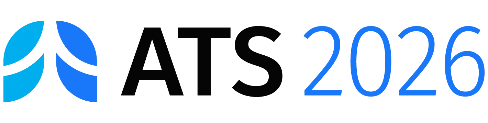
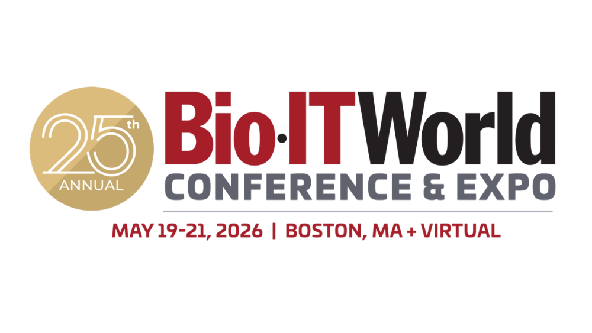
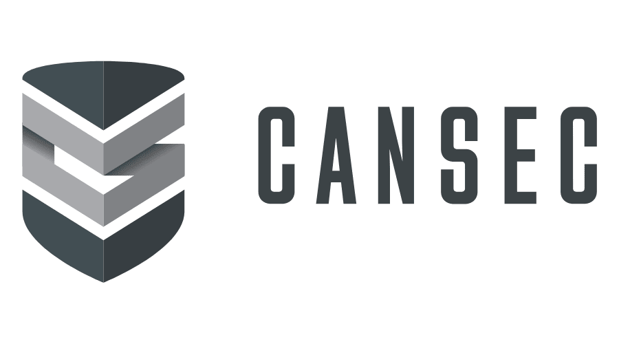

Quantum devices do exist, and are regularly getting bigger and better thanks to the work of a number of companies and academics. From sensing to computation, quantum use cases in the life sciences continue to grow. Yet, we at Iff are still asked: how can you possibly be using quantum devices today? Or believe to scale with them in any realistic way?
To answer these questions, we have set out to meet our collaborators, clients, vendors, investors, and more across the US and Canadian East Coast at the following events and beyond to show them what we mean by our usage of quantum hardware today, and how we are planning to evolve with the wider biopharma and quantum industrial niches, especially when fault tolerant quantum devices may not be the panacea that everyone is hoping for, but meaningful algorithm and sensing integration development may very well be. Our peers and collaborators enjoyed this when we completed this on the fringes of the JP Morgan Healthcare Conference 2026 , Photonics West 2026 , the Cisco Quantum Data Center Summit , NVIDIA GTC 2026, and APS Global Summit 2026 . We regulary heard the following comment after showing our work and the developments in the field:

We will be presenting within the "Breakthroughs in Critical Care" Segment within the ATS RIS, the premier conference focused on new technologies in respiratory health, and will be presenting a poster as well.

Co-founders Samarth and Kirk will be attending as members of the UC Davis Community to meet collaborators and quantum aficionados at pharmaceutical companies of all sizes.

As members of NATO's Transatlantic Quantum Community, we have been invited to attend and take part in the Defence and Quantum Capability Forum that serves as a kick-off to CANSEC, Canada's largest defence vendor conference.